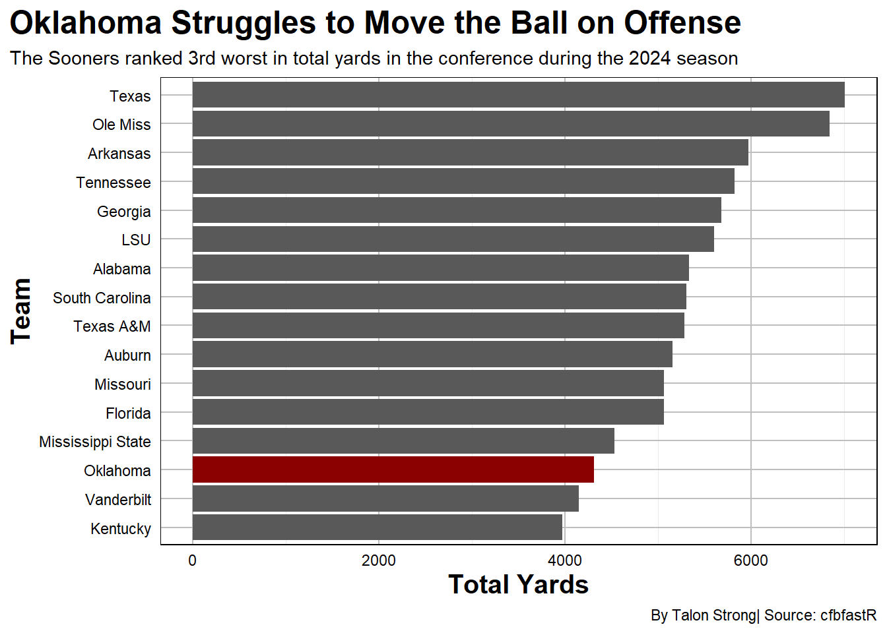
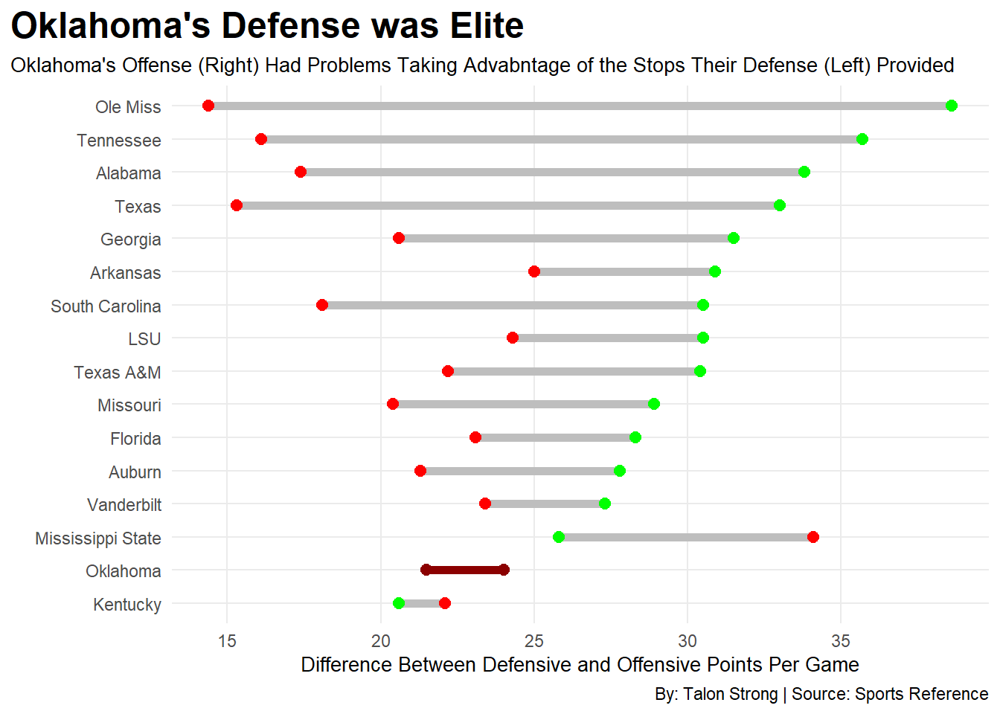

Oklahoma’s First Year in the SEC Wasn’t as Bad as it Seemed
football
sec
ncaa
Author
Talon Strong
Published
November 17, 2025
Oklahoma finished the 2024 season at 6-7 and 2-6 in the SEC.
The Sooners had plenty of hype going into the 2024 season. Coming off a 10-3 season under head coach Brent Venables in 2023, it felt like the team had turned the corner. Losing Dillon Gabriel in the portal hurt, but with former five start quarterback Jackson Arnold waiting in the wings, optimism was high. Venables, know for churning out top 20 defenses since his time as the Clemson defensive coordinator, has kept up that success during his time with Oklahoma.
The problem with a Venables led Sooner team isn’t the defense, it’s the Offense. Oklahoma’s offense ranked near the bottom of a loaded SEC in terms of total yards. This is what kept the Sooners from being a real team, and instead made them look below average.
stats <-cfbd_stats_season_team(year =2024)sec <- stats |>filter(conference =="SEC") |>arrange(desc(total_yds))ou <- sec |>filter(team =="Oklahoma")ggplot() +geom_bar(data = sec, aes( x =reorder(team, total_yds), weight=total_yds) ) +geom_bar(data=ou, aes(x=reorder(team, total_yds), weight=total_yds), fill="darkred") +coord_flip() +labs(title ="Oklahoma Struggles to Move the Ball on Offense", subtitle ="The Sooners ranked 3rd worst in total yards in the conference during the 2024 season", caption ="By Talon Strong| Source: cfbfastR", x ="Team",y ="Total Yards" ) +theme_minimal() +theme(title =element_text(color ="black", size =15, face ="bold"),plot.background =element_rect(fill ="white"),panel.border =element_rect(linetype ="solid", fill =NA),panel.grid.major =element_line(colour ="grey"),axis.text =element_text(color ="black"),plot.title.position ="plot" )

Oklahoma was never a threat on the offensive side to put fear into elite defenses in the SEC. Oklahoma lost faith in a quarterback who was supposed to lead them to glory after just one loss to Tennessee. Jackson Arnold lost a lot of confidence after that and Michael Hawkins Jr. wasn’t much of a threat through the air. Eventually Oklahoma turned back to the former five star but there wasn’t a fix.
After that it felt like the Sooners were doomed. Failing to capitalize with that much talent on the offensive side felt like a waste of a year.
Code
sec_teams <-c("Alabama", "Arkansas", "Auburn", "Florida", "Georgia", "Kentucky", "LSU", "Mississippi State", "Missouri", "Oklahoma", "Ole Miss", "South Carolina", "Tennessee", "Texas", "Texas A&M", "Vanderbilt")sec_off <- off |>filter(School %in% sec_teams) sec_def <- def |>filter(School %in% sec_teams) sec <- sec_off |>select(School, PPG = Pts) |>inner_join( sec_def |>select(School, Opp_PPG = OppPts),by ="School" ) OU <- sec |>filter(School =="Oklahoma")ggplot() +geom_dumbbell(data = sec,aes(y =reorder(School, PPG), x = Opp_PPG, xend = PPG),size =2,colour ="grey",colour_x ="red",colour_xend ="green" ) +geom_dumbbell(data = OU,aes(y =reorder(School, PPG), x = Opp_PPG, xend = PPG),size =2,colour ="darkred",colour_x ="darkred",colour_xend ="darkred" )+labs(title ="Oklahoma's Defense was Elite",subtitle ="Oklahoma's Offense (Right) Had Problems Taking Advabntage of the Stops Their Defense (Left) Provided",x ="Difference Between Defensive and Offensive Points Per Game", y ="",caption ="By: Talon Strong | Source: Sports Reference" ) +theme_minimal() +theme(plot.title =element_text(size =18, face="bold"),axis.title =element_text(size=10),plot.subtitle =element_text(size=10),plot.title.position ="plot",panel.grid.minor =element_blank() )

So now that we’ve seen how abysmal the offense was at moving the ball, let’s take a look at the comparison between the Sooners’ on both sides.
Yes, as I’ve suspected. the defense was fantastic at slowing down the opposing team’s offense, allowing under 22 points per game. The Offense could never find enough rhythm to put points on the board to help out. Oklahoma rarely got blown out last year but they weren’t exactly lighting up the scoreboard either. This Oklahoma defense gave them every opportunity to win more then six games on the year and more then two in the conference.
When your offense fails to score over 25 points per game in this day an age, in one of the best conferences in the country, look to be mediocre in the win column.
Code
OU <- sosOU$Bubble_Size <-max(OU$Rank) - OU$Rank +1OU$SOS <-as.numeric(OU$SOS)OU$OPPWIN <-as.numeric(OU$OPPWIN)OU$Bubble_Size <-as.numeric(OU$Bubble_Size)teams_to_label <-c("Oklahoma", "Michigan", "Ohio State", "Georgia", "Alabama", "TCU", "Tulsa", "FIU", "USC", "Syracuse")ggplot() +geom_point(data = OU,aes(x = SOS, y = OPPWIN, size = Bubble_Size),color ="grey60",alpha =0.4 ) +geom_point(data = OU %>%filter(Team =="Oklahoma"),aes(x = SOS, y = OPPWIN, size = Bubble_Size),color ="darkred",alpha =0.9 ) +geom_text_repel(data = OU %>%filter(Team %in% teams_to_label),aes(x = SOS, y = OPPWIN, label = Team),size =3,fontface ="bold", max.overlaps =Inf ) +scale_size_continuous(range =c(3, 15)) +labs(x ="Strength of Schedule",y ="Opponent Win Percentage",title ="Oklahoma Played One of the Toughest Schedules in the Nation",subtitle ="With Their Opponent Win Percentage over .630 it's Easy to See Why They Struggled",size ="Inverted Rank", caption ="By: Talon Strong | Source: Warren Nolan" ) +theme_minimal() +theme(plot.title =element_text(size =16, face="bold"),axis.title =element_text(size=10),plot.subtitle =element_text(size=10),plot.title.position ="plot",panel.grid.minor =element_blank() )
Oklahoma played one of the toughest schedules in the nation a season ago and still found a way to come up with six wins. Now four of those did come in non conference play but hey six wins is six wins right? The Sooners played a loaded conference schedule much like every other SEC team but they did take down a highly ranked Alabama Crimson Tide in dominant fashion. Well their defense was dominate, only giving up 3 points in the contest.
That’s exactly what makes this team so fascinating. They had a top 30 defense but won only six games. They were better then what the record shows and if the 2025 season has shown us anything through 10 games, it’s that if they had a competitive offense they would have surpassed the win total they finished with in the 2024 season.
The 2024 Oklahoma Sooners will go down as a what could of or what should of been with that terrific defense.